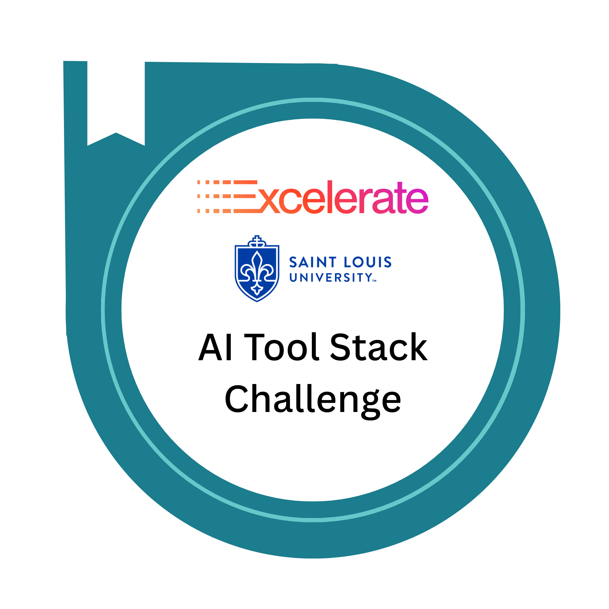

Home / Projects / Case study 03
Case study 03 · Internship · AI Tool Stack ChallengeHow I Cut A/B Test Analysis Time by ~83% with a 5-Tool AI Pipeline
AI Tool Stack Challenge (Excelerate and Saint Louis University). I designed a connected AI workflow that turns 7–11 hours of manual A/B analysis into 45–85 minutes, fully repeatable for every future experiment.
A complete A/B experiment analysis for a SaaS product feature was fragmented, slow, and error-prone: manual benchmark research, file-by-file data cleaning, spreadsheet statistics where formula errors go undetected, and report writing from a blank page: 7–11 hours per experiment, 70–110 hours per year for a team running 10.
Reduce the end-to-end analysis cycle to under 3 hours using a connected chain of five AI tools, each owning one phase and passing a structured output to the next, producing a single standardized decision document. The result over-delivered: 45–85 minutes.
Perplexity AI: benchmark research
Live-cited research producing the KPI spec, minimum detectable effect, sample size, and a common-mistakes list.
ChatGPT GPT-4o (Advanced Data Analysis): cleaning
AI-executed cleaning of 4 messy raw CSVs, paired with manual cross-file inspection: 15+ data quality issues resolved.
Julius AI: statistics
Table joins, two-sample proportions z-test, Mann-Whitney U test, segment analysis, and 3 visualizations.
Claude (Sonnet 4.6): interpretation
Plain-English interpretation and rollout verdict grounded in the Step-1 benchmarks.
Claude (Sonnet 4.6): report compilation
Compilation into a standardized 8-section A/B decision document a product team can act on immediately.
- ~83% reduction in analysis time (6.5–9.5 hours → 45–85 minutes); the workflow is fully reproducible and reusable with zero redesign.
- Surfaced a key strategic insight: historical activation rate of 1.1% vs an industry benchmark of 10–30%, reframing product priorities.
- The standardized 8-section report makes cross-experiment comparison possible for the first time.
What I learned designing the workflow: in my own words. Click to load (streams from Google Drive; nothing autoplays).

AI Tool Stack Challenge: Completed
Saint Louis University · Awarded 25 Jun 2026
A/B Testing and Experimentation Analysis for SaaS Product Feature Adoption and Onboarding Optimization: the complete written deliverable (problem framing, data preparation, the 5-tool pipeline, statistics, and the standardized decision document).